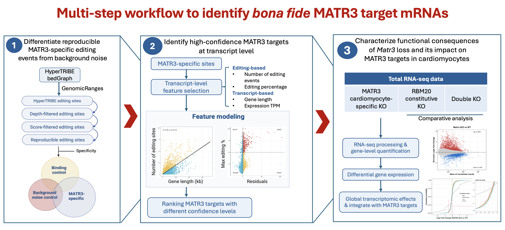
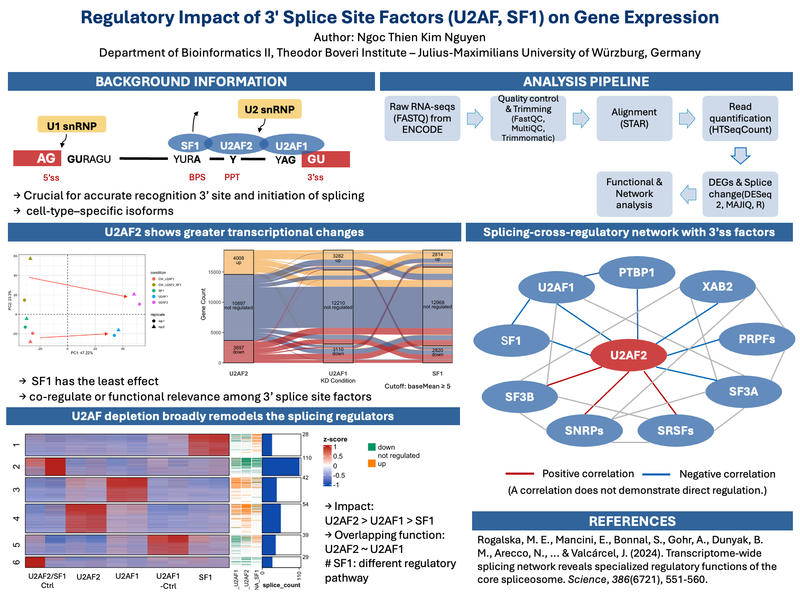

Nov. 2025 - Jul. 2026
Master's Thesis
Theodor Boveri Institute, Julius-Maximilians-Universität Würzburg
Title: Characterisation of the RNA Binding Behaviour of the RNA-Binding Protein MATRIN3 in Murine Cells
Grade: 1.3/4.0

Tools & Packages:
R · Bioconductor · DESeq2 · GenomicRanges · PureCLIP · BindingSiteFinder · IGV
Methods:
HyperTRIBE · iCLIP · bulk RNA-seq · Feature modeling · Regression-based modeling · Differential expression analysis · GO enrichment analysis
Research Areas:
RNA-binding proteins · RNA editing computational workflow · Post-transcriptional regulation
Apr - Sep. 2025
Computational RNA Biology Intern
Theodor Boveri Institute, Julius-Maximilians-Universität Würzburg

Tools & Environments:
FastQC · MultiQC · Trimmomatic · STAR · HTSeq-count · featureCounts · R · DESeq2 · MAJIQ · VOILA · IGV · Linux · Bash · HPC/Slurm
Methods:
Differential gene expression analysis · Alternative splicing analysis · RNA-seq data processing and quality control · GO enrichment analysis · Clustering & correlation analysis
Research Areas:
Alternative splicing · RNA-seq data analysis · RNA regulation